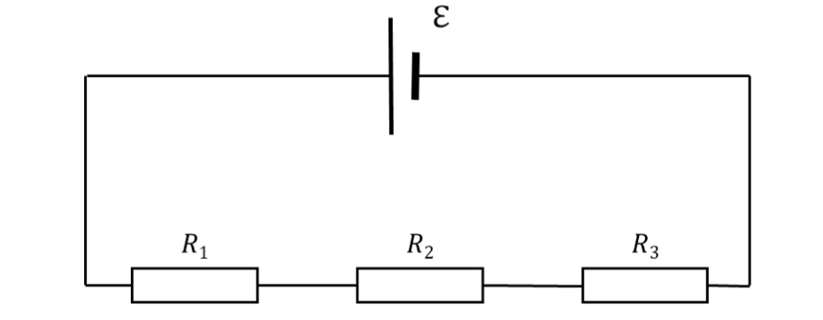

Lecture 2: Current-Voltage Characteristics and Resistors#
Learning Objectives#
By the end of this lecture you should:
Be able to draw current-voltage plots for ohmic conductors.
Be able to draw current-voltage plots for some non-ohmic conductors.
Be able to recall, derive and use the equations for resistors in series.
Be able to recall, derive and use the equations for resistors in parallel.
Voltage-Current Relationships#
In the last lecture we saw that for a circuit/component with a given resistance, as voltage is increased the current flowing through the circuit increases linearly.This is the case for an Ohmic resistor i.e. a resistor where Ohm’s law applies (V=IR).
For many circuits/components an increase in EMF does not result in a linear increase in current as shown in the figure below. These would be characterised as non-ohmic resistors and examples include filament lamps, semiconductor diodes and thermistors.
Although for a non-Ohmic resistor the current is given by a non-linear function of the voltage, the characteristics of this function (the trend in the measured data) are dependent on what type of non-ohmic device the current is being measured across. For example, compare the difference between the current-voltage relationshops of an incandescent lamp and a semiconductor diode:
In the case of the filament lamp, regardless of whether or not a positive or negative voltage is applied across the component a current will flow (the direction of the current being dependent on the polarity of the voltage). We observe that as the voltage increases, for a given increase in voltage there a smaller increase in current. The resistance of the device therefore increases at higher voltages.
The semiconductor also shows a non-linear relationship between voltage and current above a particular voltage known as the threshold voltage. In the diode for any given increase in voltage, we see an even larger increase in the current. The current-voltage relationship is therefore exponential.
We also observe that when the voltage is reversed (i.e. negative) no current flows. This is a useful characteristic to have as diodes can be used in circuits to only allow current to move in one direction. In reality there would be a small negative current due to a phenonema known as reverse-current leakage and when the applied voltage becomes sufficiently large (the breakdown-voltage), the diode would break and current would be allowed to flow in the opposite direction.
Temperature Dependencies#
Current-voltage relationships of many non-Ohmic materials can be explained by considering if they have a negative temperature coefficient (NTC) or a positive temperature coefficient. Materials with either of these properties are called thermistors.
To understand the behaviours of these materials we need to consider an alternative expression used to calculate current, I:
where \(n\) is the density of free charge carries (e.g. number of electrons per square metre) of the material, \(a\) is the cross sectional area of the material (e.g. cross sectional area of wire), \(v\) is the drift velocity of the charge carries and \(q\) is the charge of each individual charge carrier.
This equation intuatively makes sense - if current is the rate of flow of charge, by having more charge carries, additional charge per carrier, faster moving charges and a larger area for them to flow through we would expect a larger current.
Positive Temperature Coefficient Thermistors#
One example of a PTC thermistor is the tungsten (metal) filament in the incandescent bulb discussed above. In operation a potential difference is applied across the tungsten filament, inducing an electric field which causes electrons to flow through the wire. This current causes the filament to heat up to a high enough temperature to emit visible light.
To understand why for a PTC, the resistance increases (current decreases) as a function of voltage, we must first take a look at our filement on the microscopic scale. Tungsten is a metal and as such it has a metalic lattice structure. The individual tungsten atoms are uniformly distributed at repeating points known as lattice points. The outermost electrons of each atom are delocalised and able to move throughout the bulk material (hence why metals are good electrical conductors) as shown in the figure below:
The atoms themselves are able to oscillate around their lattice points as shown in the gif below.
As the atoms oscilate, they esentially get in the way of the electrons and reduce their drift velocity, \(v\). The hotter the filament, the more kinetic energy these atoms will have, the larger the amplitude of oscillations and the more they impede the flow of electrons. It therefore follows that the resistance of the wire increases as the temperature of the filament increases. As such, if a given increase in voltage across the filament leads to an increase in its temperature, we should expect the current to increase by a smaller and smaller margin for each step up in voltage.
Negative Temperature Coefficient Thermistors#
In a NTC thermistor we see that for a given increase in voltage, there is an even larger increase in the corresponding current. An NTC thermistor is typically made of a semiconductor material or graphite. In these materials as the temperature of material increases, more and more electrons in the material gain sufficient energy to be liberated from their atoms. Thus the number of free electrons that can contribute to the current increases (the density of free charge carriers \(n\) increases) leading to a larger current. Therefore if an increase voltage results in an increase in the materials temperature, the current will also increase and at an increasing rate (exponential increase).
Resistor Combinations#
Determining the voltage or current for a circuit is simple if there is only one resistor involved, however, it is often the case that a circuit will contain an arrangement of many resistors. We must therefore consider how to determine the equivalent resistance of a combination of resistors. To do this is relatively simple, but we must first be aware of parallel and series arrangements.
Components arranged in series have the same amount of current flowing through them.
Components arranged in parralel are seperated by junctions (a point where current can split into multiple paths).
When calculating the effective resistance of a combination of resistors we must take into consideration if they are arranged in series, in parallel or both.
Resistors in Series#
The figure below shows resistors arranged in series.

To derive an expression to determine how to calculate the equivalent resistance we must recal/consider two things:
The total voltage drop across each component in a circuit must be equal to the EMF supplied by the source (conservation of energy).
The current flowing through components arranged in series must be equal (conservation of charge).
Using this first principle, we can write an expression for the voltage drops across each resistor:
where \(V_T\) is the total voltage of supplied to the circuit. Assuming that these resistors are Ohmic, we can express these individual voltage drops in terms of the current flowing through each resistor and its resistance (\(V=IR\)):
We can also express \(V_{T}\) in terms of the current and total resistance \(R_{T}\):
By comibining the two equations above we determine the desired expression:
We have therefore proven that the equivalent resistance of resistors arranged in series is simply equal to the sum of the individual resistances.
Important
The total equivalent resistance of a combination of resistors arranged in series is given by: \( R_{T} = R_1 + R_2 + R_3\).
Resistors in Parallel#
The figure below shows resistors arranged in parallel.
To determine the total equivalent resistance of resistors arranged in parallel we must understand two additional concept:
The potential difference measured across components arranged in parallel is always the same.
At a junction current is split into smaller currents, the sum of which is equal to the total current.
Taking this into consideration, we can now write an expression for the potential differences across the resistors arranged in parallel and the total voltage supplied ot the circuit:
Similarly we can write an expression relating the individual currents to the total current, \(I_{T}\):
Using Ohms law (\(V=IR\)) this equation becomes:
which simplifies to:
Important
The total equivalent resistance of a combination of resistors arranged in parallel is given by: \(\frac{1}{R_T} = \frac{1}{R_1} + \frac{1}{R_2} + \frac{1}{R_3}\).
Resistors in Series and Parallel Combined#
It is often the case that a circuit will contain both resistors arranged in series and in parallel. To determine the equivalent resistance of the circuit we simply use the rules above twice. For example consider the circuit below:
To determine the total resistance:
Determine the equivalent resistance of the two resistors arranged in series. These two resistors can now be treated as a single resistor.
Determine the evivalent resistance of the “two” resistors arranged in parallel.
Similarly, for the circuit below:
the total equivalent resistance can be determined by doing these steps in the opposite order:
Determine the equivalent resistance of the two resistors arranged in paralel. These two resistors can now be treated as a single resistor.
Determine the evivalent resistance of the “two” resistors arranged in series.
Questions#
Warning
Atempt the questions before looking at the solutions otherwise you will not learn!
Students who look at mark schemes without going through the motions of a question often think “yes, that’s what I would have done”, but are then unable to perfom on exams as the knowledge was never consolidated through practise.
Hint
For these questions you may find it useful to draw out the circuits to help you visualise what is going on.
Question 1#
Four resistors (\(2.0\,\Omega\), \(5.0\, \Omega\), \(7.0\, \Omega\) and \(9.0\, \Omega\)) are arrange in series and connected to a \(12\,V\) battery.
a) Determine the total resistance of the circuit.
b) Determine the current flowing through the circuit.
c) Determine the voltage across the \(5\, \Omega\) resistor.
Q1a Solution
Using the resistors in series equation:
\(R_T = R_1 + R_2 + R_3 + R_4 \)
\(R_T = 2\,\Omega + 5.0\,\Omega + 7.0\,\Omega + 9.0\,\Omega \)
\(R_T = 23\,\Omega\)
Q1b Solution
Using Ohm’s law and the total resistance allows us to determine the current flowing through the circuit:
\( I = \frac{V}{R_T} \)
\( I = \frac{12\,V}{23\,\Omega} \)
\( I = 0.52\,A\)
Q1c Solution
Conservation of charge dictates that the current flowing through each of the resistors must be the same, therefore the voltage drop across the \(5\, \Omega\) resistor can be calculated using Ohm’s law:
\( V=IR \)
\(V = 0.52\,A \times 5\, \Omega \)
\(V = 2.6\,V\)
Question 2#
Three resistors (\(6.0\,\Omega\), \(8.0\,\Omega\) and \(15\,\Omega\) are arranged in parallel and connected to a battery, which has produces a current of \(3.0\,A\).
a) Determine the total resistance of the circuit.
b) Determine the voltage produced by the battery.
c) Determine the current flowing through the \(8.0\,\Omega\) resistor).
Q2a Solution
Using the resistors in parralel equation:
\(\frac{1}{R_T} = \frac{1}{R_1} + \frac{1}{R_2} + \frac{1}{R_3} \)
\( \therefore \frac{1}{R_T} = \frac{1}{6.0\,\Omega} + \frac{1}{8.0\,\Omega} + \frac{1}{12\,\Omega}\)
\( \therefore \frac{1}{R_T} = \frac{3}{8} \,\Omega^{-1} \)
\(\therefore R_T = \frac{8}{3} \,\Omega \approx 0.38 \,\Omega \)
Q2b Solution
Using Ohm’s law and the total resistance allows us to determine the total voltage supplied to the curcuit by the battery:
\( V_T = IR_T \)
\( V_T = 3.0 \,A \times 0.38 \,\Omega \)
\( V_T = 1.1 \, V \)
Q2c Solution
The potentail difference across components arranged in parallel is going to be the same and in this case simply equal to the voltage of the battery, thus we can determine the current flowing through the \(8.0\,\Omega\) resistor again just using Ohm’s law:
\( V_T = V = IR\)
\(I = \frac{V}{R} \)
\(I = \frac{1.1\, V}{8.0 \, \Omega} \)
\( I = 0.14 \, A \)
Question 3#
An arrangement of resistors is in a circuit is shown below. The resistances of each resistor are as follows: \(R_1 = 2.00\, \Omega\), \(R_2 = 3.00\, \Omega\), \(R_3 = 4.00\, \Omega\), \(R_4 = 6.00\, \Omega\), \(R_5 = 2.00\, \Omega\) The circuit includes a \(5.00V\) battery.
a) What is the total equivalent resistance of the circuit shown?
b) What is the total current flowing through the circuit?
c) What is the currents and voltage drops measured for each of the resistors.
Q3a Hint
If the equivalent resistance of the resistors arranged in parallel is determined, we can simply treat these three resistors as one resistor arranged in series with \(R_1\) and \(R_5\).
Q3a Solution
First, the equivalent resistance of the resistors arranged in parallel can be determined:
\(\frac{1}{R_P} = \frac{1}{R_2} + \frac{1}{R_3} + \frac{1}{R_4} \)
\( \therefore \frac{1}{R_P} = \frac{1}{3.00\,\Omega} + \frac{1}{4.00\,\Omega} + \frac{1}{6.00\,\Omega}\)
\( \therefore \frac{1}{R_P} = \frac{3}{4} \,\Omega^{-1} \)
\(\therefore R_P = \frac{4}{3} \,\Omega \)
Now we can treat this parallel arrangement of resistors as a single resistor \(R_P\) and simply determine the total resistance of the circuit using our formula for resistors arranged in series:
\(R_T = R_1 + R_P + R_5 \)
\(R_T = 2.00\,\Omega + \frac{4}{3}\,\Omega + 2.00\,\Omega \)
\(R_T = 5.33 \,\Omega\)
Q3b Solution
Once the total equivalent resistance of the circuit has been calculated, the total current flowing can be determined using Ohm’s law:
\( V_T = I R_T \)
\( \therefore I = \frac{V_T}{R_T} \)
\( I = \frac{5.00 \, V}{5.33 \, \Omega} \)
\( I = 0.938 \, A \)
Q3c Hint
To find the individual voltages and currents across all of the resistors we must remember that the current for resistors arranged in series is always the same (conservation of charge), the voltage across resistors arranged in parallel is always the same, and the voltage drops across all components in a circuit must be equal to the voltage supplied.
Q3c Solution
Due to conservation of charge we know that the current flowing through \(R_1\) and \(R_2\) must be equal to the total current. The voltage drop across these resistors can be determined using Ohm’s law and as these have the same resistance we only need to do the calculation once:
\( V = I R\)
\( V = 0.938 \, A \times 2.00 \, \Omega\)
\( V = 1.88 \, V \)
\( V_{R1} = V_{R2} = 1.88 \, V\)
The current will be split when passing through the resistors arranged in parallel. We also know that the voltage drop for all of the resistors arranged in parallel, \(V_{RP}\), will be the same. To begin let’s determine what this voltage drop would be - we can do this by remembering that the total voltage drop across all components must equal the voltage supplied:
\( V_T = V_{R1} + V_{R2} + V_{RP} \)
\( V_{RP} = V_T - V_{R1} - V_{R2} \)
\( V_{RP} = 5.00 \, V - 1.88 \, V - 1.88 \, V \)
\( V_{RP} = 1.24 \, V \)
\( V_{RP} = V_{R2} = V_{R3} = V_{R4} = 1.24 \, V \)
Now we know the voltage for all of the resistors arranged in parallel, we can calculate the current flowing through each of them using Ohm’s law:
\( I = \frac{V}{R} \)
\( I_{R2} = \frac{V_{R2}}{R2} = \frac{1.24 \, V}{3.00 \, \Omega} \)
\( I_{R2} = 0.413 \, A\)
\( I_{R3} = \frac{V_{R3}}{R3} = \frac{1.24 \, V}{4.00 \, \Omega} \)
\( I_{R3} = 0.310 \, A\)
\( I_{R4} = \frac{V_{R4}}{R4} = \frac{1.24 \, V}{6.00 \, \Omega} \)
\( I_{R3} = 0.207 \, A.\)
We have therefore sucessfully determined the voltages and currents through each of the resistors in this circuit.
Warning
It is imperative that you are comfortable calculating the total equivalent resistance of various arrangements of resistors. This is a core skill needed for circuit calculations.
You will only develop understanding by actually doing the calculations. Only use the solutions to check your work or if you are stuck!